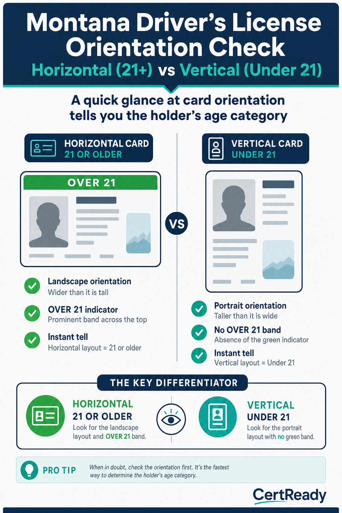

Checking Identification (Including Digital IDs)
Montana's open acceptable-ID standard per ARM 42.13.901(1), including HB 196 digital IDs and tribal IDs
What you'll learn
- K5: Acceptable forms of identification in Montana
- K6: Strategies underage persons use to obtain alcohol
- P2: Calculate the latest valid DOB for a legal sale today
- P3: Inspect a Montana driver's license
- P4: Verify a government-certified digital ID per HB 196
Montana ARM 42.13.901(1) sets an open standard for ID. You may accept any government-issued ID as long as it (1) has a photo, (2) has a date of birth, and (3) is not altered or manipulated. The Montana DOR “IDs for Purchasing Alcoholic Beverages” fact sheet says the same thing.
So the question is never “is it on a fixed list” - it is “is this a real, unaltered government-issued ID with a photo and a date of birth that lets me confirm the customer is 21 or older.”
Common examples of acceptable ID (ARM 42.13.901(1))
- Driver's license or state ID card from any US state or Canadian province. It does not have to be current - an expired license is still acceptable as long as the photo and date of birth are readable and the card is not altered.
- Military / armed-services ID card (active duty, reserve, retired, or dependent) issued by the DoD.
- US or foreign passport, or US passport card - the wallet-sized passport card is fully acceptable.
- Montana temporary driver's license or temporary ID - the paper interim issued while the permanent card is mailed.
- Montana probationary driver's license - typically held by drivers age 15–18; read the date of birth carefully.
- Tribal ID issued by any federally recognized tribe - Montana or out-of-state. Any federally recognized tribe's photo ID is acceptable (see next chunk).
- US permanent resident card (Form I-551 / 'green card') - a federally issued credential with a photo and date of birth.
- Government-certified digital ID - added by HB 196, effective October 1, 2025. A state-issued credential presented through an official wallet or state-approved app (not a screenshot).
- Other government-issued photo IDs that show a date of birth and are not altered are also acceptable - for example, a foreign government ID, a state (public) college or university ID, or a Montana medical marijuana ID card. The test is government-issued + photo + date of birth + not altered.
![Acceptable-ID poster (Montana ARM 42.13.901(1) - OPEN standard; show these as examples, not a closed list). Header: 'Acceptable = ANY government-issued ID with a photo + date of birth that is not altered. Use it to confirm age 21+.' Example thumbnails: Montana driver's license; any US-state, Canadian, or foreign driver's license; US or foreign passport / US passport card; military (DoD) ID; Montana temporary or probationary driver's license; tribal ID from ANY federally recognized tribe (Montana or out-of-state); US permanent resident card (Form I-551); state college/university ID; Montana medical marijuana ID card; and government-certified digital ID via Apple Wallet, Google Wallet, or the official Montana state app (HB 196, eff. Oct 1 2025). Footer: 'Expired is OK. A real, unaltered government ID with a photo and DOB is acceptable. If you cannot read the photo or DOB, or it looks altered, ask for a second ID or refuse.' Brand: navy headers, teal accents, off-white background. CertReady wordmark in corner.](../../img/MT-ALCOHOL-M04-s1-c2.png)
Tribal IDs are acceptable from any federally recognized tribe - Montana or out-of-state. Montana's seven federally recognized tribes include: • Blackfeet Nation • Chippewa Cree (Rocky Boy's Reservation) • Confederated Salish & Kootenai (Flathead Reservation) • Crow Tribe • Fort Belknap Indian Community (Assiniboine & Gros Ventre) • Fort Peck (Assiniboine & Sioux) • Northern Cheyenne But you are not limited to these. Under ARM 42.13.901(1), a photo ID issued by any federally recognized tribe is acceptable, including out-of-state tribes such as the Navajo Nation. Card designs vary by tribe, so confirm the photo and date of birth and that the card is not altered, just as you would with any ID.
MCA 16-4-1006(1)(c) (HB 196): Curriculum must cover procedures for checking identification, including government-certified digital identification cards. Falsifying or fraudulently using a digital ID is a separate offense under MCA 16-6-305 (also amended by HB 196).
What is NOT acceptable (these fail the government-issued + photo + date-of-birth + not-altered test): • Anything with no photo (library cards, voter-registration cards, birth certificates) • Anything with no date of birth (most warehouse-club cards like Costco or Sam's Club, many work badges) • Private (non-government) IDs, such as private-club cards or private-school IDs • A photocopy, photo, or screenshot of an ID - you need the actual credential • An ID that has been altered or tampered with, or that does not match the person Note: an expired government ID is not on this list - expiration alone does not make an ID unacceptable. If you genuinely cannot confirm the person is 21+ (you can't read the photo or DOB, or something looks altered), ask for a second form of ID or refuse the sale.
The check sequence
- Take it in your own hand. Don't read it through a wallet, phone case, or laminated holder. You need to feel the card.
- Look at the photo. Match the person's hairline, ear shape, eye spacing, and jaw to the picture. Hair color and style change; bone structure does not.
- Calculate the date of birth. Today's date minus 21 years is the line. If the DOB is later, the customer is under 21.
- Don't reject an ID just because it's expired. Montana's standard has no “unexpired” requirement. Confirm the photo matches, read the date of birth to check 21+, and make sure the card isn't altered. Refuse only if you can't confirm identity or age, or the ID looks tampered with.
- Feel the card. Real cards have uniform thickness, sharp corners, no peeling lamination, no bubbles.
- Tilt it. The holographic state seal or security overlay should shift in the light. Flat, printed-on holograms are a fake-ID tell.
- Cross-check with a question. "What's your zip code?" or "What's the middle name?" should be instant. A real owner doesn't pause to think.
The DOB math, made easy. • Subtract 21 from the current year. • Use today's month and day. • Anyone whose DOB is after that date is under 21. Example for May 8, 2026: the cutoff DOB is May 8, 2005. Born May 8, 2005 or earlier = legal.
Born May 9, 2005 or later = under 21.
The vertical-vs-horizontal layout tell. Most US states issue licenses in horizontal layout for adults (21+) and vertical layout for minors (under 21) so a glance at orientation tells you the holder is provisionally underage. Montana follows this convention. Vertical license = check the DOB even more carefully. A horizontal license held by someone who looks young still gets the full inspection - but a vertical license should never be served without confirming the customer crossed 21 since the card was issued.

A government-certified digital ID is a state-issued credential the customer holds in their phone - Apple Wallet, Google Wallet, or a state-specific app. It is NOT a screenshot of a license. It is NOT a third-party app like ID.me. Only a government-issued digital credential counts under HB 196.
Digital ID check sequence
- Ask the customer to present the credential through the official wallet or government-approved app - not a screenshot or photo. The official presentation is interactive (the live credential responds to your verification step); a static image won't work.
- Look for the official state seal or the issuing state's logo. Generic 'license' icons are not acceptable.
- Confirm the photo matches the person. Same rules as physical ID: bone structure, ear shape, eye spacing.
- Read the date of birth and apply the same DOB math.
- Check expiration. The digital credential expires when the underlying physical ID does.
- If the customer hands you their unlocked phone instead of presenting the credential, ask them to present it properly. A phone screen showing a website is not a digital ID.
Falsifying a digital ID is a separate offense under MCA 16-6-305 (HB 196 amendment). Penalties stack on top of the underlying minor-in-possession charge. If you suspect a fake digital ID: • Refuse the sale. • Document the incident in the log. • Don't try to seize the phone or take a screenshot. • Call the manager.
Why Montana adopted digital IDs slowly. Many states moved on digital credentials in 2020–2022; Montana waited until HB 196 in 2025 in part because of a concern about handing servers a phone they couldn't fully inspect. The compromise the bill landed on: only government-certified credentials count, presented through the official wallet application (Apple Wallet, Google Wallet, or the state app). A screenshot or a photo of a license is explicitly NOT a digital ID under the rule.
This matches how TSA and other regulated industries treat the same technology. A few practical implications for the server: • Don't accept a digital ID presented through a third-party app (e.g., "a wallet I built" or a generic image gallery). The credential must come from the wallet app or the state's own app. • If the customer is having trouble pulling up the credential, that is fine - give them time.
The slow-presentation pattern is a known anti-fraud feature; legitimate digital IDs sometimes require a biometric prompt before they display. • Always present the verification mode (the wallet may flip the credential to a verifier view with extra security graphics). If you don't see a verifier view, the credential is not properly presented.
- The DOB-math shortcut and the mistakes to avoid. The calculation is simple
- today's date minus 21 years
- but two common errors trip up new servers: Mistake #1: Forgetting the month/day. If today is May 8, 2026, the latest valid DOB is May 8, 2005. A DOB of May 9, 2005 means the customer is 20 years, 364 days old
- under 21. New servers sometimes only check the year ("2005, so they're 21!") and miss the month/day. Always read all three parts of the DOB. Mistake #2: Trusting the customer's stated age. Customers will sometimes volunteer "I'm 22" or "I just turned 21 last month" to short-circuit the check. Ignore it. Do the math from the DOB on the ID. The customer's stated age is not a credential. A useful daily ritual: at the start of every shift, write today's cutoff DOB on a sticky note at the bar station. "Today's cutoff: May 8, 2005. DOBs ON or BEFORE this date are 21+." After a few shifts you'll do the math automatically, but the sticky note prevents end-of-night errors when fatigue makes mental math slippery. The leap-year edge case. If a customer's DOB is February 29, the legal age cutoff applies on February 28 in non-leap years and February 29 in leap years. Most state IDs simply treat the person as having a birthday on March 1 in non-leap years for administrative purposes, but if you ever see a February 29 DOB and today is February 28 or 29 of a non-leap year, take an extra moment to verify with a supervisor before serving.
Red flags on physical IDs
- Lamination peeling or bubbling at the edges
- Photo doesn't match (different ear shape, eye spacing, hairline that wouldn't change with age)
- Holographic seal looks flat or printed instead of shifting in the light
- Customer hesitates or panics when asked their zip code, middle name, or DOB
- Out-of-state ID for someone whose accent or other details don't match the state
- Card feels too thin or too thick, or has rounded corners that should be sharp
- Two friends hand over IDs and look at each other for the answers to your follow-up questions
- Vertical ID held by someone who claims to be 25+ - vertical IDs are issued to under-21 holders
![Fake-ID red-flags poster: 8 thumbnails in a 2×4 grid, each with a one-line caption - use EXACTLY these 8 tells, do not substitute: (1) Peeling or bubbled lamination at the card edges; (2) Photo doesn't match the customer's bone structure, ear shape, or hairline; (3) Hologram is flat/printed-on (doesn't shift in the light when tilted); (4) Vertical layout (under-21 format) on a card claiming an adult DOB; (5) Soft or rounded corners inconsistent with a real DMV-issued card; (6) Inconsistent card thickness or visible seam at the edge; (7) Misspellings, font mismatches, or wrong-state design elements; (8) Customer hesitates or stumbles when asked their own zip code or address. Header: 'Two or more tells stacking = refuse + document.' Brand colors. Used as bar/register reference poster.](../../img/MT-ALCOHOL-M04-s4-c1.png)
The two-friends pattern. When two underage friends use a shared fake-ID pipeline, they often have rehearsed answers for the obvious questions (DOB, zip code) but fail on the second-tier questions: "What's the middle name?" or "What's your sister's name?" The pause-and-look-at-friend tell is a high-confidence fake-ID signal even when the card itself looks decent.
Tactics underage customers use
- The borrowed older sibling. Underage customer borrows a 21+ sibling's real ID. Photo is close but not exact; ask the second-tier questions.
- The bathroom-pass swap. A 21+ friend orders, then passes the drink to the underage friend in the bathroom or at a side table.
- The proxy buyer at the door. A stranger or older friend offers to walk in and buy for the under-21 group hanging outside.
- The 'I left my ID in the car' move. Customer says their ID is at the car, you let them in, they don't go back. No ID, no service - period.
- The crowd-rush. A group of 4–6 enters together; the door staff scans the front of the line and waves the back through. Each person gets ID-checked, no exceptions.
- The fake-ID ring. Mass-produced fakes from a single source. Often share a typeface, the same hologram pattern, the same 'state' for an out-of-state ID. If you see a second one in a week with the same odd font, the manager should know.
The bathroom-pass watch. Walk the floor. If the same customer keeps ordering drinks but never has them in front of them when you swing back, follow the drink. The pass-off to a minor is the most common after-the-fact dram-shop violation in college towns.
Document the moment you see the drink change hands.
Refusing an ID at the door is the lowest-friction refusal in alcohol service. The customer hasn't ordered yet. There's no tab to dispute, no half-finished drink to take away. Get good at this and most of your refusal work is done before service starts.
Door-refusal scripts
- ID looks altered or doesn't match the person: “This doesn't look right to me, so I can't accept it tonight. Do you have another ID?”
- No date of birth on it: “A warehouse-club card doesn't show a date of birth, so I can't use it to verify age. Do you have a driver's license, passport, military ID, tribal ID, or your mobile ID?”
- Suspicious fake: "I'm not able to verify this one tonight. Sorry." Hand it back, do not seize it. Document.
- Photo doesn't match: "The photo doesn't match - I can't verify this is you. Got another ID?"
- ID in the car: "No ID, no entry. We'll be here when you come back with it."
Don't seize a suspected fake ID. Hand it back. Some bouncers grab the card and say "I'm keeping this." Keeping a suspected fake ID can create legal risk, including a possible property claim. The safer course is to hand it back, refuse, and document. • Hand the ID back. • Refuse entry / refuse service. • Document description, time, ID details (state, ID number, name). • Note the description of the customer for a possible police report.
Let law enforcement decide what happens to the card - that's not the bartender's job.
Scenario 1: The DOB math. A customer hands you a Montana driver's license. Photo matches the person. The DOB shows 03/15/2005.
Today is May 8, 2026.
Scenario 2: The digital ID that looks off. A customer presents a digital ID in Apple Wallet. The state seal is from Wisconsin. The photo is small and blurry.
When you ask them to TAP to present, they say "it's loading" and just hold the static screen toward you.
The Montana on-premise bar sees a wider out-of-state distribution than the corner convenience store. Tourists driving up from Yellowstone and Glacier carry Wyoming, Idaho, Utah, Colorado, Washington, and Oregon licenses. Snowbird travelers heading to Big Sky carry Texas, Arizona, and California. Cross-border Canadian visitors carry Alberta, British Columbia, and Saskatchewan licenses. All of these are acceptable under ARM 42.13.901(1) (and expired is OK), but each one has its own design quirks: the Idaho DL hologram sits in a different corner than the Montana one; the British Columbia license has its photo offset to the right; California now issues a federal-compliant card with a gold bear on the top right that is easily mistaken for a state seal.
The single highest-leverage practice for on-premise staff is to spend a slow Tuesday afternoon studying actual current-design samples from each of the top 10 most-common out-of-state IDs you see. Print the reference cards, post them in the back hall, and reference them whenever a card you've never seen lands at the host stand. The 90-second study session is the cheapest insurance against an honest mistake that would otherwise produce a sale to a minor.
Tribal IDs from any federally recognized tribe are acceptable under ARM 42.13.901(1) - Montana tribes and out-of-state tribes alike. Blackfeet Nation, Chippewa Cree (Rocky Boy's), Confederated Salish & Kootenai (Flathead), Crow, Fort Belknap (Assiniboine & Gros Ventre), Fort Peck (Assiniboine & Sioux), and Northern Cheyenne all issue photo IDs that count as valid Montana ID for alcohol-purchase purposes. The card design varies by tribe, and a server who has only ever seen one tribe's card may not recognize another tribe's. Two practical notes: (1) out-of-state tribal IDs are also acceptable - a Navajo Nation ID issued in Arizona, for example, is acceptable because it is a federally recognized tribe's government-issued ID with a photo and date of birth; (2) tribal IDs are sometimes refused inappropriately by undertrained staff because the design looks unfamiliar. That refusal is a service-discrimination problem and can attract attention from tribal liaison offices and the Montana Human Rights Bureau.
The right move when an unfamiliar tribal ID appears is to verify against the printed reference, accept it if it is a government-issued tribal photo ID with a date of birth that is not altered, and refuse with the standard refusal script only if you cannot confirm that (e.g., a card whose issuer you cannot identify, or one that appears altered).
The 'I work for the airline / I'm a doctor / I'm a state legislator' move. Periodically a customer will produce a credential that does not meet the acceptable-ID standard and ask you to accept it anyway: a TSA Known Traveler card, a state-bar attorney ID, a hospital staff badge, or a US Capitol staff ID. None of these verifies age under ARM 42.13.901(1) unless it is a government-issued ID with both a photo and a date of birth. Many of these credentials identify a role or workplace, but they do not show a date of birth, which means the DOB-verification step you need cannot be performed. The refusal script is the same as for any credential that cannot verify age: 'I need a government-issued ID with your photo and date of birth before I can sell alcohol. I can't ring this up with that credential tonight.' Customers in this category sometimes escalate to the manager because the ask carries a status component; the manager's job is to back up the door staff, not to make exceptions.
The progressive-penalty risk under ARM 42.13.101 does not change based on the customer's profession.
Module 4 Quiz
Reviewer view shows the questions and correct answers immediately so you can evaluate the assessment content without submitting attempts.
Which of the following is NOT acceptable as ID under ARM 42.13.901(1)?
What was added to Montana's acceptable-ID rules by HB 196 in October 2025?
If today is May 8, 2026, what is the LATEST DOB on a customer's ID that still makes them legal to serve?
A screenshot of a state ID on the customer's phone counts as a digital ID under HB 196.
Name two physical signs that an ID might be fake.
If you suspect a digital ID has been falsified, what is the right immediate action?
A vertical-layout driver's license is typically issued to whom?
Under Montana's acceptable-ID rule, which statement about tribal IDs is correct?